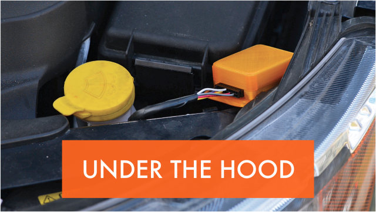
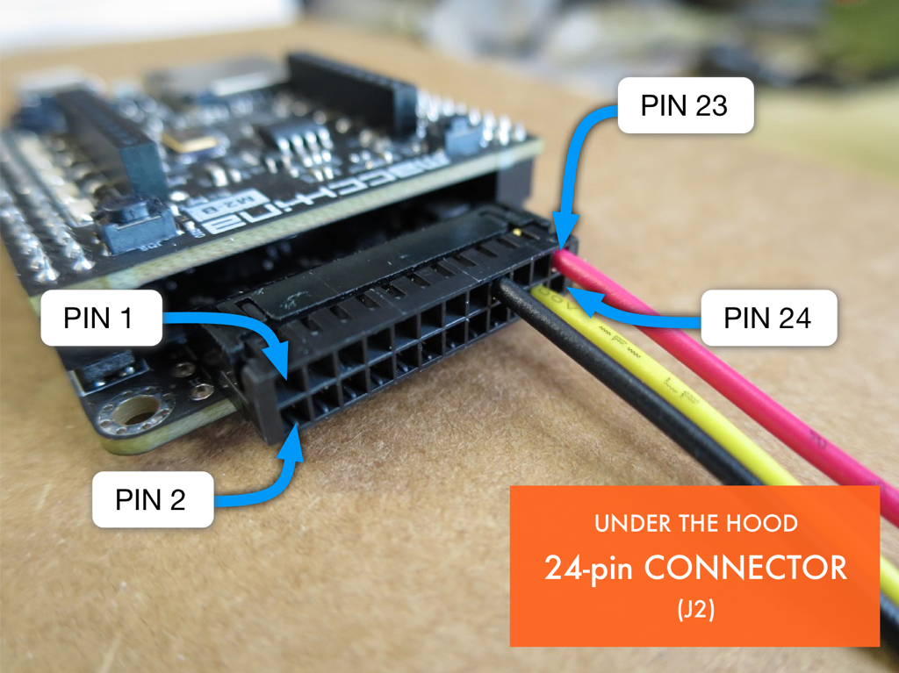

UTH (Under the hood)
The "Under-the-Hood" version of M2 is exactly the same as the "Under-the-Dash" version, but rather than a OBD2 connector, it uses a more general purpose connector. This connector takes the form of a 24-pin pluggable connector. Typical usage for this connector would be a more permanent installation where M2 would be hard-wired or spliced into an existing cable harness.

The image below shows the pin orientation of the 24 pin connector. Notice that the top row has the ODD pins and the bottom row has the EVEN pins.

This following table describes the functionality of each pin.
| Pin | Schematic name | function |
|---|---|---|
| 1 | TP1_NET | Test Point |
| 2 | SWC_BUS | Single Wire CAN |
| 3 | J1850-_BUS | J1850 - BUS |
| 4 | J1850+_BUS | J1850 + BUS |
| 5 | DGND | Digital GND |
| 6 | DGND | Digital GND |
| 7 | MSC_BUS- | CAN1 LOW |
| 8 | MSC_BUS+ | CAN1 HIGH |
| 9 | DGND | Digital GND |
| 10 | DGND | Digital GND |
| 11 | TP3_NET | Test Point |
| 12 | CHASSIS | CHASSIS GND |
| 13 | TP4_NET | Test Point |
| 14 | DGND | Digital GND |
| 15 | DGND | Digital GND |
| 16 | DGND | Digital GND |
| 17 | DGND | Digital GND |
| 18 | DGND | Digital GND |
| 19 | HSC_BUS- | CAN0 LOW |
| 20 | HSC_BUS+ | CAN0 HIGH |
| 21 | 9141_L_BUS | L-LINE or LIN channel 2 |
| 22 | 9141_K_BUS | K-LINE or LIN channel 1 |
| 23 | VIN | +12V INPUT |
| 24 | TP2_NET | Test Point |